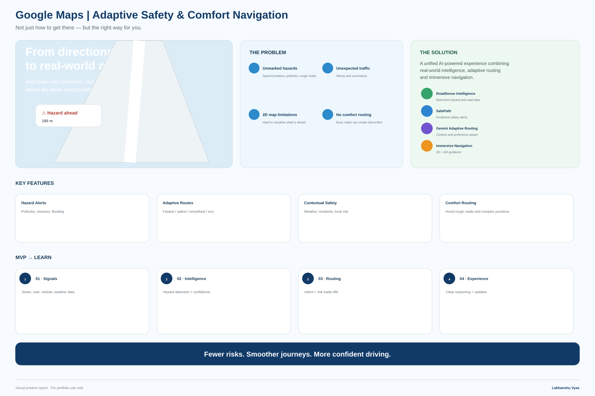
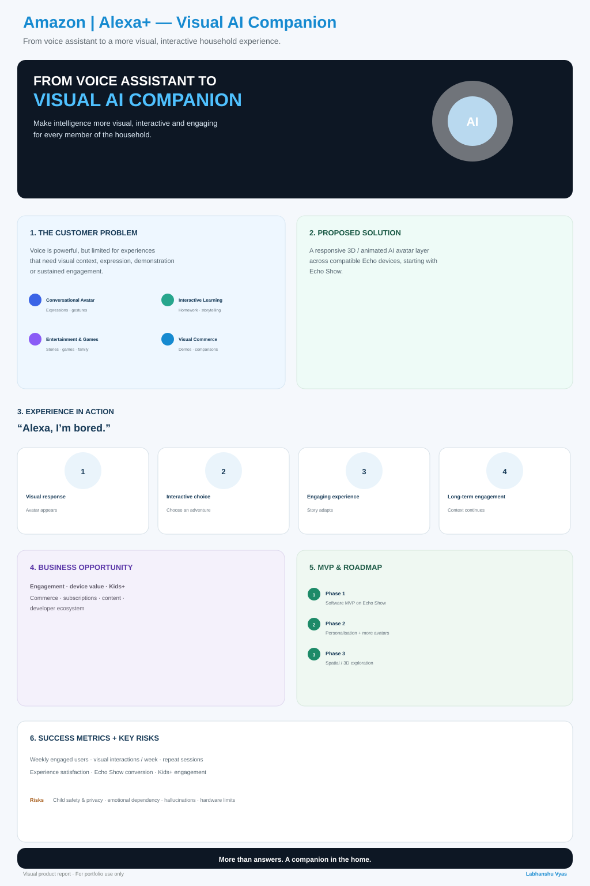
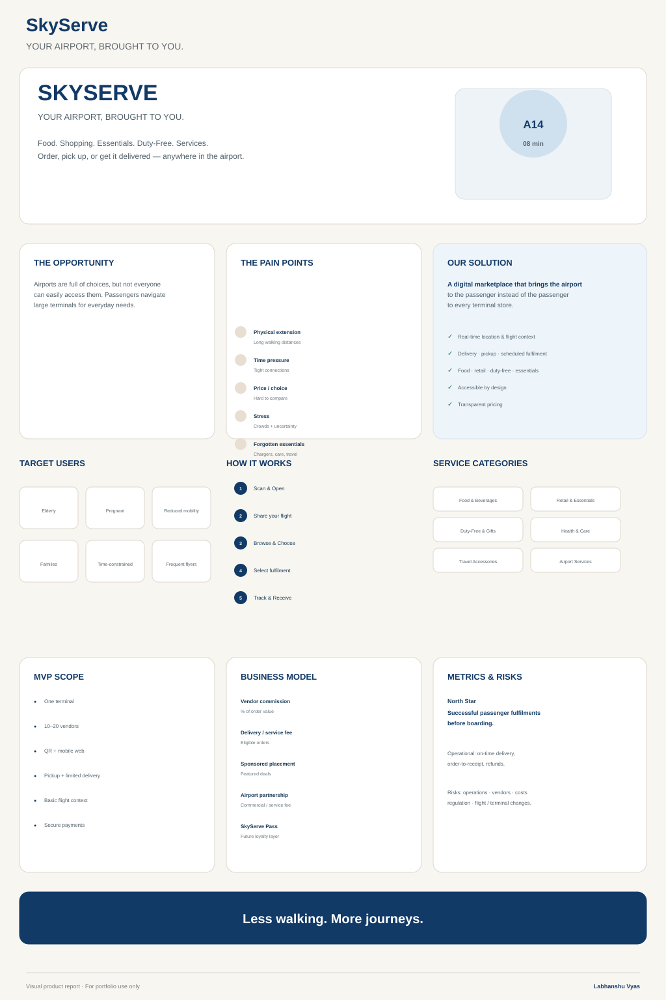
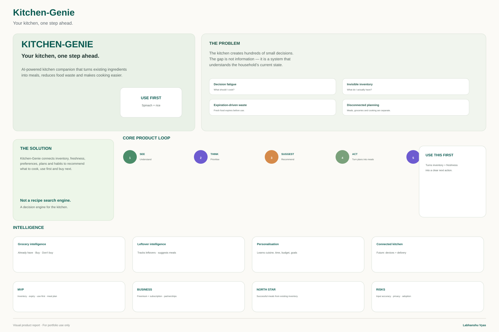

01 · Google Maps
Adaptive Safety & Comfort Navigation
Not just how to get there — but the right way for you.
Road safety & awareness · Visual report↗
I explore how technology, AI and thoughtful product decisions can turn everyday problems into useful, practical experiences.

01 · Product reportMaps
02 · Product reportAlexa+
03 · Product reportSkyServeI'm an Information Technology graduate interested in the space where technology meets people and products.
My background began with software and data. I've worked with Python, C++, SQL and data analysis, built software projects, worked directly with clients and led teams. Over time, I became increasingly interested in the decisions around the code — understanding problems, defining what should be built and figuring out whether it creates meaningful value.
That interest has led me toward Product Management. I enjoy taking an ambiguous problem, breaking it down, understanding the people affected by it and exploring a solution that is useful as well as practical.
Outside technology, sport has shaped how I work. As a national-level netball player and sports captain, I've learned to make decisions under pressure, adapt strategy when circumstances change and help a team perform with the people actually available.
Four focused product explorations, each documented as a visual report so the problem, solution, MVP and product thinking can be understood quickly.
Not just how to get there — but the right way for you.
Making intelligence more visual, interactive and engaging for every member of the household.
Bringing airport food, retail and essentials to the passenger instead of asking the passenger to navigate the terminal for every need.

An AI-powered kitchen companion that turns existing ingredients into delicious meals, reduces food waste and makes everyday cooking effortless.
One exploration, shown in miniature: how an observation becomes a product opportunity, a first version and a way to learn.
Voice interaction is fast and natural, but many answers remain invisible. That can limit context, demonstration and sustained engagement.
Instead of replacing voice, what if a visual layer made voice more useful?
Make ambient AI more visual, expressive and useful without making the interaction more complicated.
Start with a software MVP on compatible Echo Show devices: responsive visual interaction, contextual responses and a focused set of household experiences.
Test understanding, task effectiveness, repeat usage and engagement with experiences that are difficult through voice alone.
Freelance, internship and university work across product, software and data.
As a national-level netball player and sports captain, I've had to make decisions when the obvious option wasn't available, adapt strategy under pressure and bring people together when confidence was low.
One experience that stayed with me was leading a younger team after several of our strongest players moved into a higher age group. Rather than trying to replace them directly, I redistributed responsibilities around the strengths of the players I had and focused on building their confidence.
I'm interested in early-career Product and APM opportunities where I can learn quickly, work closely with strong teams and contribute across technology and product.